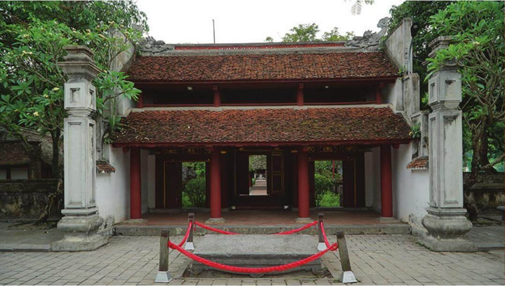
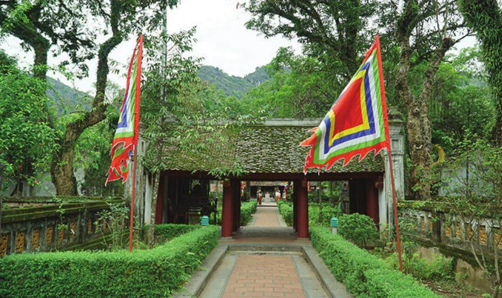

CỐ ĐÔ HOA LƯ
Outer and Inner Gates of Lê Temple

Overall, the architecture of the Temple of King Lê Đại Hành has much in common with that of the Temple of King Đinh Tiên Hoàng. On your journey of discovery, please step through the two gates, the Outer Nghi Môn and the Inner Nghi Môn (ceremonial gates), to enter the main space of the temple.
The first gate is the Outer Nghi Môn, which strongly bears the stamp of the Nguyễn dynasty’s architectural style of the 19th century. The artistic highlight here is the dominant decorative theme of the “Bát bửu” (Eight Treasures), exquisitely depicting familiar objects such as a book chest, a brush holder, a wine gourd, a chessboard, a scroll, a lute, a fruit basket, and a sacred pouch. These images are skillfully combined with soft, flowing ribbons, creating a harmonious interplay of stillness and motion in a tight yet lively composition. Through them, the artisans of old expressed spiritual harmony, profound philosophy, and the wish for a fulfilled and happy life.

Passing through the Outer Nghi Môn, please continue inside to the Inner Nghi Môn. Unlike the outer gate, the Inner Nghi Môn strongly reflects the architecture and carving art of the Later Lê period of the 17th century. The structure has three bays with a sturdy three-row column framework. It is also a place for visitors to pause and straighten their clothing, showing reverence and solemnity before entering the sacred part of the monument.

At the Inner Nghi Môn, you can admire the refined sculptural skill of the old masters in the lively imagery of gathered dragons: from dragons holding pearls to nesting dragons (rồng ổ) and clustered dragons (rồng đàn). Do not miss the distinctively folk carving found here: a bas-relief depicting two fairies riding dragons. With their arms outstretched in graceful dance and their soft garments, the celestial maidens recall the delicate dances of the legendary Apsara dancers.

Passing through these ancient Nghi Môn gates with their exquisite carving, visitors feel not only the artistic talent of the artisans but also a devotion that keeps the soul of the nation alive.